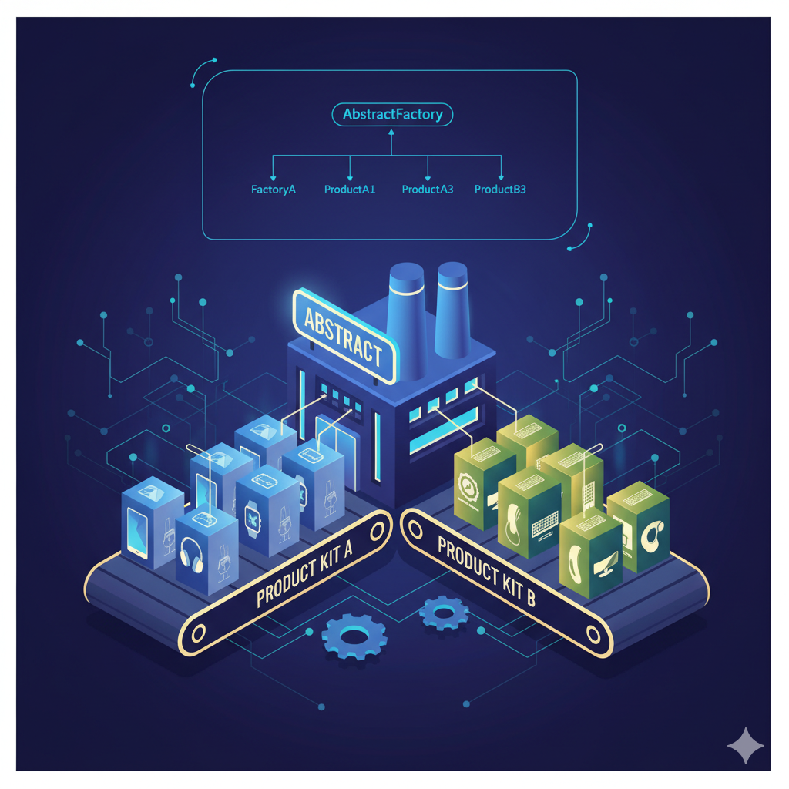
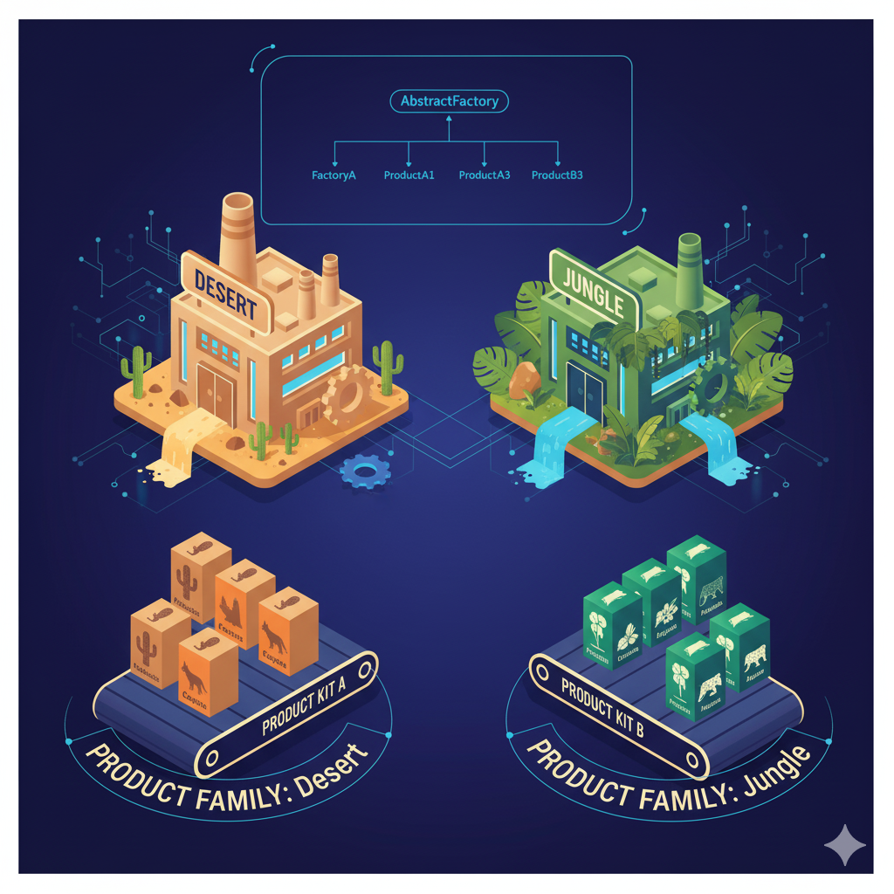
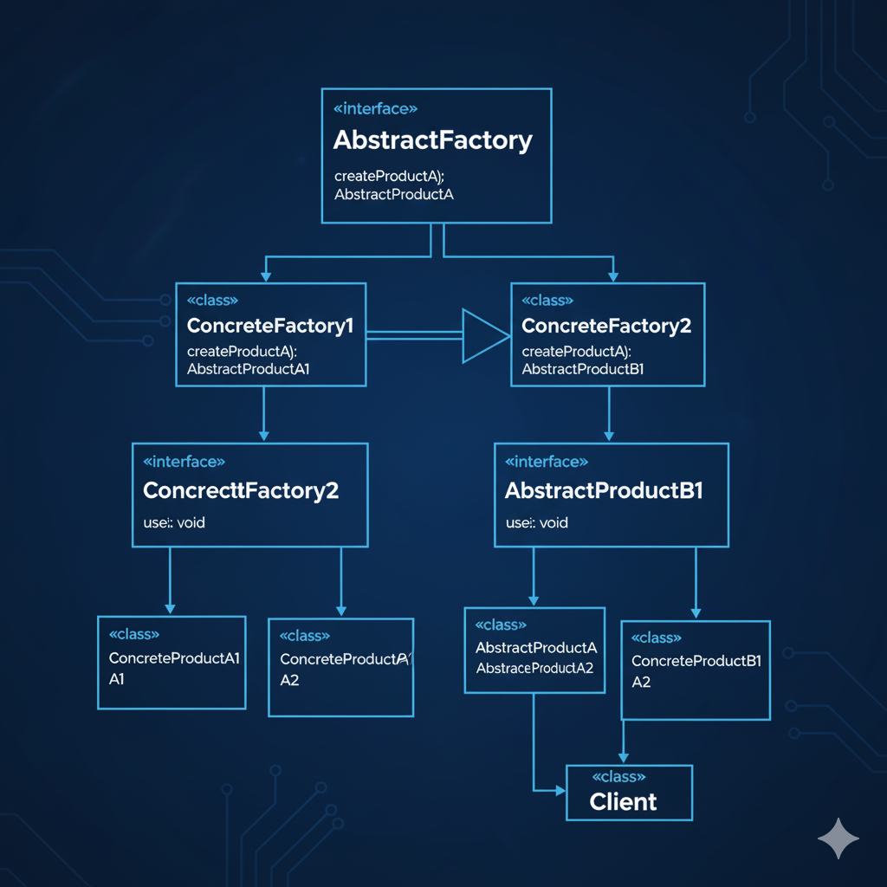

Introducción: La Fábrica de Fábricas
Si el Patrón Factory Method es un especialista que sabe construir un producto, el Patrón Abstract Factory es el director de orquesta. No crea un solo objeto, sino una familia completa de objetos relacionados, asegurando que todos sean coherentes entre sí.
Imagina que estás diseñando una aplicación que debe verse nativa tanto en Windows como en macOS. No solo necesitas un botón; necesitas un botón, una casilla de verificación y una ventana que todos sigan el mismo estilo (Windows o macOS).
Aquí es donde brilla Abstract Factory. Es una "fábrica de fábricas" que te da la fábrica correcta (la de Windows o la de macOS) y tú le pides los componentes. El resultado es un conjunto de objetos que garantizan la consistencia visual y funcional.
- Veremos por qué este patrón es clave para la portabilidad y los "temas" (theming).
- Implementaremos el ejemplo clásico de GUI en C#.
- Lo diferenciaremos de su "primo", el Factory Method.

Prompt: Ilustración conceptual que muestra el Patrón Abstract Factory como una "fábrica maestra" que produce diferentes "kits" de productos (Kit A, Kit B).
1. El Ecosistema como Fábrica Abstracta
En la naturaleza, un ecosistema es una fábrica abstracta perfecta. Un ecosistema (como una fábrica) no produce solo "un animal" o "una planta", sino un conjunto de seres vivos que están diseñados para coexistir.
La Fábrica de Ecosistemas
Imagina una interfaz IEcosistemaFactory. Esta fábrica abstracta define qué se debe crear:
CrearPlanta()CrearHerbivoro()CrearDepredador()
Fábricas Concretas: Desierto y Selva
Ahora tenemos dos implementaciones (fábricas concretas):
FabricaDesierto:- Crea
Cactus(Planta) - Crea
Liebre(Herbívoro) - Crea
Coyote(Depredador)
- Crea
FabricaSelva:- Crea
Orquidea(Planta) - Crea
Tapir(Herbívoro) - Crea
Jaguar(Depredador)
- Crea
La clave del patrón es la consistencia. Si le pides a la FabricaDesierto un conjunto de seres vivos, nunca te dará un Jaguar o una Orquídea. Te da un conjunto de productos (Cactus, Liebre, Coyote) que tienen sentido juntos. Has creado una familia de objetos coherente.

Prompt: Diagrama de analogía que muestra dos fábricas (Desierto, Selva) produciendo familias de productos relacionados (Cactus/Coyote, Orquídea/Jaguar).
2. El Kit de Muebles Moderno vs. Victoriano
Otro ejemplo es comprar un conjunto de muebles en IKEA. No compras una silla victoriana, una mesa de metal moderna y un sofá rústico. Compras un kit donde todas las piezas pertenecen a la misma línea de diseño (ej. "HÄSTBÖRK" o "FINNÅRP").
Fábrica Abstracta (IFabricaMuebles):
CrearSilla()CrearMesa()CrearSofa()
Fábricas Concretas (FabricaModerna, FabricaVictoriana):
- La
FabricaModernacreaSillaEames,MesaCristalySofaMinimalista. - La
FabricaVictorianacreaSillaLuisXV,MesaCaobaySofaChesterfield.
Como cliente, simplemente decides qué estilo quieres. Le pides al catálogo (la fábrica concreta) una silla, una mesa y un sofá, y recibes un salón perfectamente combinado, sin tener que saber los nombres de los modelos específicos.
3. Implementación en C# (GUI Multiplataforma)
Vamos a implementar el ejemplo clásico: una fábrica de componentes de UI que puede generar elementos para Windows o macOS.
3.1 Los Productos Abstractos (Interfaces)
Primero, definimos los "contratos" para cada producto de la familia. Queremos botones y casillas de verificación.
/// <summary>
/// Producto Abstracto A: Define un botón genérico.
/// </summary>
public interface IButton
{
void Paint();
}
/// <summary>
/// Producto Abstracto B: Define una casilla genérica.
/// </summary>
public interface ICheckbox
{
void Paint();
}3.2 Los Productos Concretos (Implementaciones)
Ahora creamos las variantes de Windows y macOS para cada producto. Observa cómo los productos de una misma familia (ej. Windows) tienen un estilo coherente.
// Familia de Productos 1: Windows
public class WindowsButton : IButton
{
public void Paint()
{
Console.WriteLine("🪟 Renderizando botón [Estilo Windows 11]");
}
}
public class WindowsCheckbox : ICheckbox
{
public void Paint()
{
Console.WriteLine("🪟 Renderizando checkbox [Estilo Windows 11]");
}
}
// Familia de Productos 2: macOS
public class MacButton : IButton
{
public void Paint()
{
Console.WriteLine("🍏 Renderizando botón (Estilo macOS Aqua)");
}
}
public class MacCheckbox : ICheckbox
{
public void Paint()
{
Console.WriteLine("🍏 Renderizando checkbox (Estilo macOS Aqua)");
}
}3.3 La Fábrica Abstracta (Interfaz)
Esta es la interfaz clave. Define un método para crear cada producto de la familia.
/// <summary>
/// La Fábrica Abstracta.
/// Define métodos para crear cada producto abstracto.
/// </summary>
public interface IGUIFactory
{
IButton CreateButton();
ICheckbox CreateCheckbox();
}3.4 Las Fábricas Concretas (Implementaciones)
Aquí es donde se decide qué familia de productos crear. Cada fábrica implementa la interfaz y devuelve los productos concretos de su ecosistema (Windows o macOS).
/// <summary>
/// Fábrica Concreta 1: Produce productos de la familia Windows.
/// </summary>
public class WindowsFactory : IGUIFactory
{
public IButton CreateButton()
{
return new WindowsButton();
}
public ICheckbox CreateCheckbox()
{
return new WindowsCheckbox();
}
}
/// <summary>
/// Fábrica Concreta 2: Produce productos de la familia macOS.
/// </summary>
public class MacFactory : IGUIFactory
{
public IButton CreateButton()
{
return new MacButton();
}
public ICheckbox CreateCheckbox()
{
return new MacCheckbox();
}
}3.5 El Cliente (Quien usa la fábrica)
El código cliente solo necesita saber sobre las interfaces (IGUIFactory, IButton). No sabe (ni le importa) si está trabajando con Windows o Mac. Recibe una fábrica y la usa.
/// <summary>
/// El código cliente.
/// Trabaja con fábricas y productos a través de sus interfaces abstractas.
/// </summary>
public class Application
{
private readonly IButton _button;
private readonly ICheckbox _checkbox;
// El cliente recibe la fábrica (¡Inyección de Dependencias!)
// No sabe si es una WindowsFactory o MacFactory.
public Application(IGUIFactory factory)
{
Console.WriteLine("Cliente: Creando UI con la fábrica proporcionada...");
_button = factory.CreateButton();
_checkbox = factory.CreateCheckbox();
}
public void PaintUI()
{
_button.Paint();
_checkbox.Paint();
}
}
// --- Ejecución en Program.cs ---
public class Program
{
public static void Main(string[] args)
{
// Decidimos qué fábrica usar en tiempo de ejecución
// (Esto podría venir de un archivo de configuración o detección del SO)
string os = "Windows"; // Cambia a "Mac" para probar
IGUIFactory factory;
if (os == "Windows")
{
factory = new WindowsFactory();
}
else
{
factory = new MacFactory();
}
// El cliente (Application) no cambia, solo recibe la fábrica
Application app = new Application(factory);
app.PaintUI();
}
}Resultado en Consola (si os = "Windows"):
Cliente: Creando UI con la fábrica proporcionada...
🪟 Renderizando botón [Estilo Windows 11]
🪟 Renderizando checkbox [Estilo Windows 11]Resultado en Consola (si os = "Mac"):
Cliente: Creando UI con la fábrica proporcionada...
🍏 Renderizando botón (Estilo macOS Aqua)
🍏 Renderizando checkbox (Estilo macOS Aqua)4. Abstract Factory vs. Otros Patrones
Es muy común confundir Abstract Factory con Factory Method y Builder.
Abstract Factory vs. Factory Method
- Propósito:
- Factory Method: Crea un producto. Se basa en la herencia (las subclases deciden qué crear).
- Abstract Factory: Crea familias de productos. Se basa en la composición (se pasa un objeto fábrica al cliente).
- Implementación: Es muy común que una Abstract Factory se implemente usando varios Factory Methods (un método por cada producto que crea).
Abstract Factory vs. Builder
- Propósito:
- Builder: Construye un objeto complejo paso a paso (ej.
new Pizza().ConQueso().ConPepperoni().Build()). - Abstract Factory: Crea múltiples objetos simples de una sola vez (ej.
factory.CrearSilla(),factory.CrearMesa()).
- Builder: Construye un objeto complejo paso a paso (ej.
- Enfoque: Builder se enfoca en la construcción flexible de un solo objeto. Abstract Factory se enfoca en la consistencia de familia de múltiples objetos.
5. Diagrama UML
El diagrama UML formal muestra claramente la separación entre las familias de productos.
Oficialmente, el Patrón Abstract Factory:
Proporciona una interfaz para crear familias de objetos relacionados o dependientes sin especificar sus clases concretas.
Los Actores del Patrón
- AbstractFactory (
IGUIFactory): La interfaz que declara los métodos de creación (CreateButton,CreateCheckbox). - ConcreteFactory (
WindowsFactory,MacFactory): Implementa los métodos para crear una familia de productos concreta. - AbstractProduct (
IButton,ICheckbox): Las interfaces para los productos. - ConcreteProduct (
WindowsButton,MacButton, etc.): Las implementaciones de los productos, agrupadas por familia. - Client (
Application): Utiliza solo las interfacesIGUIFactoryeIButton/ICheckbox.

Prompt: Diagrama UML claro del Patrón Abstract Factory mostrando AbstractFactory, ConcreteFactory, AbstractProduct (A y B) y ConcreteProducts.
⚠️ Cuándo NO Usar el Patrón Abstract Factory
Abstract Factory es poderoso, pero introduce mucha complejidad. No lo uses a la ligera.
Evítalo Si...
- Solo tienes una familia de productos: Si tu app solo va a ser estilo Windows y nunca habrá otra, es un exceso de ingeniería.
- Los productos no están relacionados: Si no importa que el botón sea estilo Mac y la ventana estilo Windows (¡raro!), no necesitas forzar la consistencia.
- Solo necesitas crear UN producto: Si solo creas botones, pero no checkboxes ni ventanas, usa Factory Method.
El Gran Inconveniente
El principal problema de Abstract Factory es la rigidez al añadir nuevos productos.
Si mañana decides que tu familia de UI también necesita un ITextbox:
- Debes añadir
CreateTextbox()a la interfazIGUIFactory. - Esto rompe todas las fábricas concretas existentes (
WindowsFactory,MacFactory), que ahora deben implementarCreateTextbox().
Es fácil añadir nuevas familias (ej. LinuxFactory), pero difícil añadir nuevos productos a todas las familias.
💪 Ejercicio Práctico: Facciones de un Videojuego
Implementa un sistema para crear unidades en un juego de estrategia (RTS). El juego tiene dos facciones: Terran y Zerg. Cada facción tiene unidades terrestres y aéreas.
Requisitos
- Productos Abstractos: Crea interfaces
ISoldado(con métodoAtacar()) yIUnidadAerea(con métodoMover()). - Productos Concretos:
- Terran:
Marine(ISoldado) yViking(IUnidadAerea). - Zerg:
Zergling(ISoldado) yMutalisk(IUnidadAerea).
- Terran:
- Fábrica Abstracta: Crea
IFaccionFactorycon métodosCrearSoldado()yCrearUnidadAerea(). - Fábricas Concretas: Implementa
TerranFactoryyZergFactory. - Cliente: Escribe un código que reciba una
IFaccionFactory, cree un pequeño ejército (2 soldados, 1 aéreo) y los haga actuar, sin saber de qué facción son.
Conclusión: El Poder de la Consistencia
El Patrón Abstract Factory es la solución definitiva para un problema clave: ¿Cómo creo objetos que no solo están relacionados por un tipo, sino por un tema o familia?
Al desacoplar al cliente de las implementaciones concretas, Abstract Factory te permite cambiar todo el "look and feel" (o el ecosistema, o el conjunto de muebles) de tu aplicación simplemente cambiando la fábrica que inyectas al principio.
Es un patrón que requiere planificación, ya que define la "línea de productos" completa desde el principio. Pero cuando se usa correctamente, da como resultado un código cliente increíblemente limpio y sistemas que pueden escalar en variantes (familias) con una elegancia que pocos patrones pueden igualar.